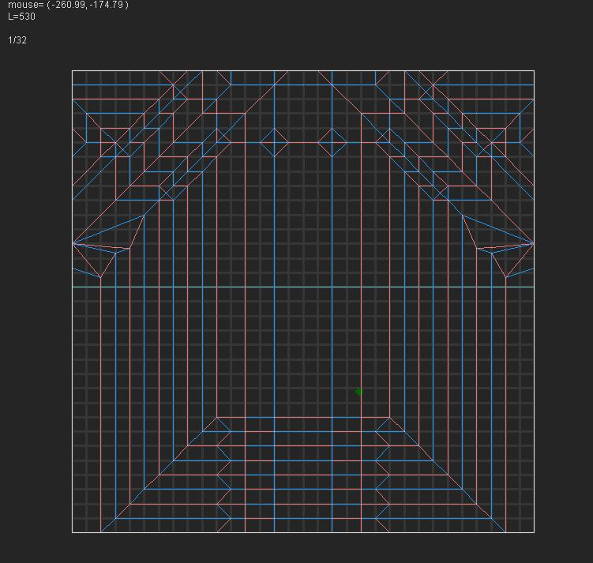
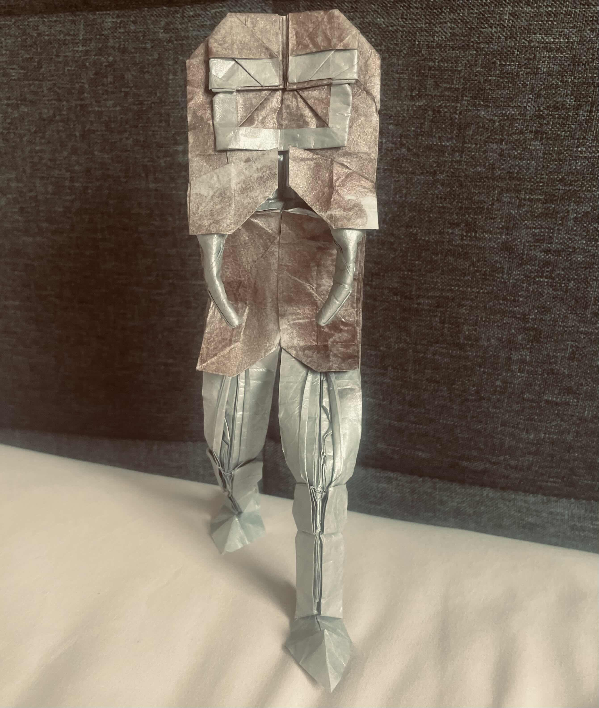
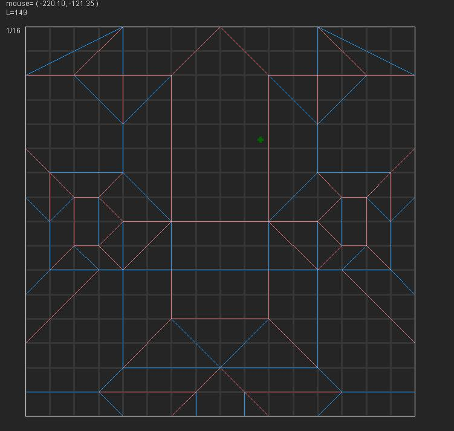
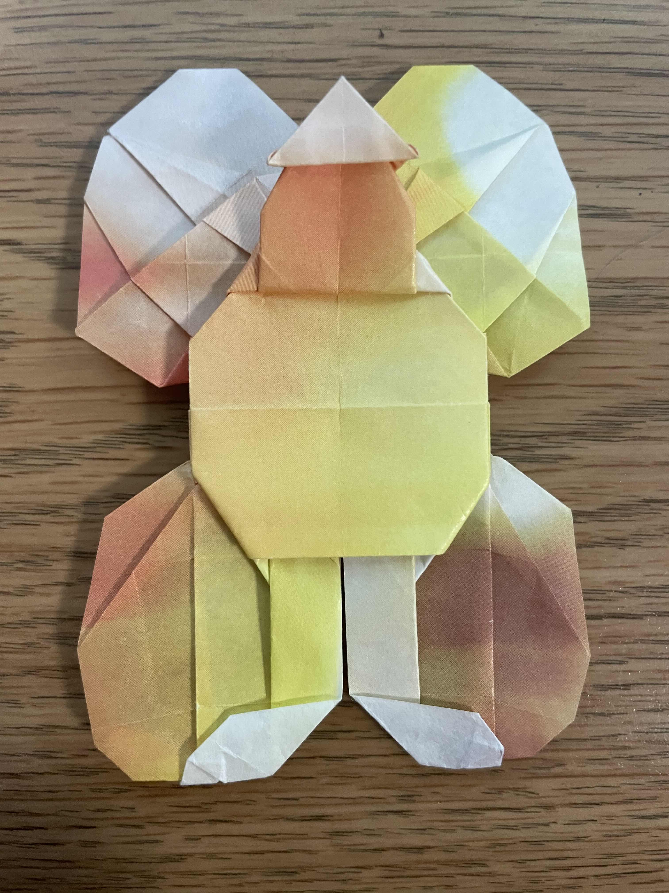
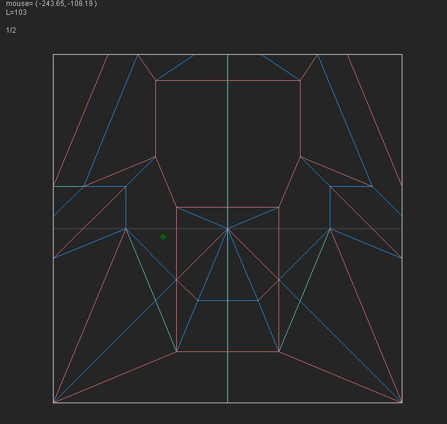
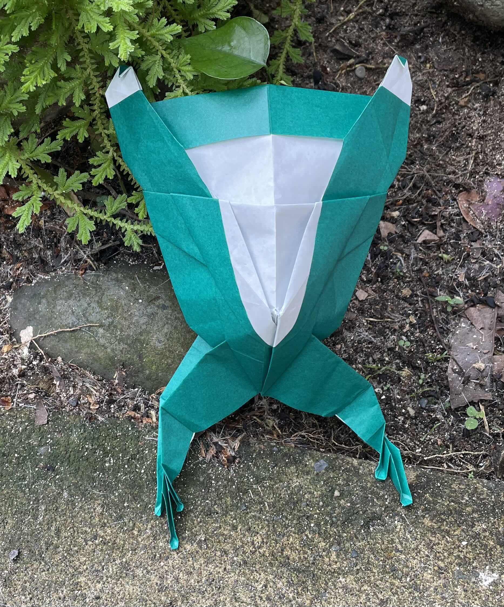
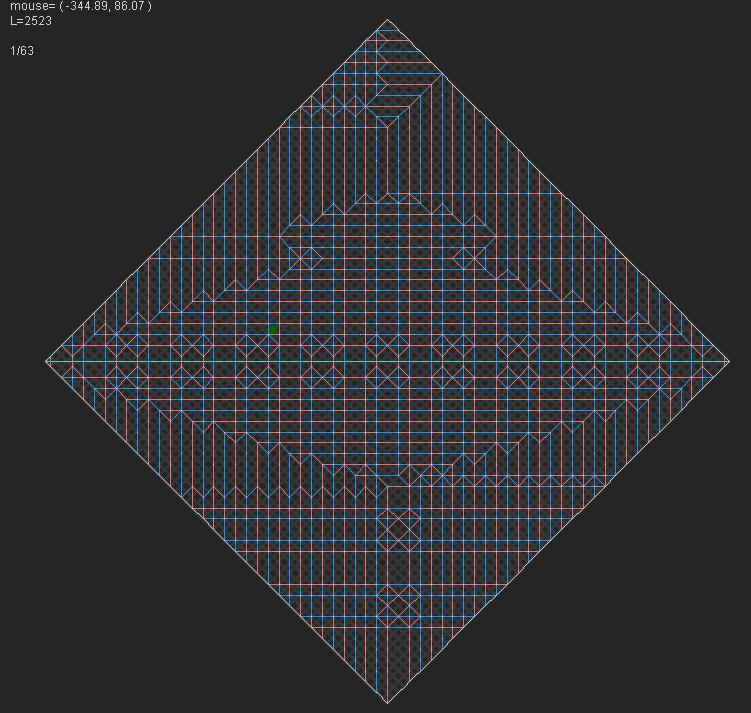
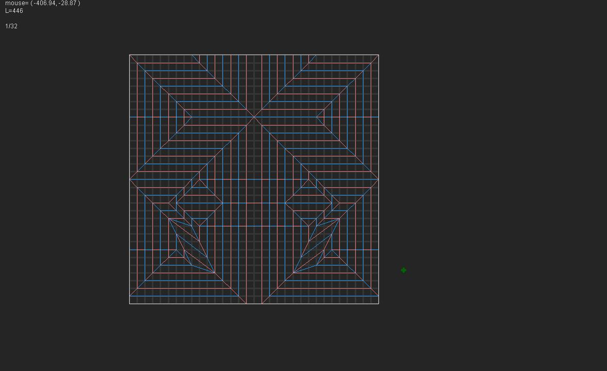

Origami
Everything on this website is an original design by me and every design I have ever made is on this site in reverse chronilogical order. These are not my nicest looking folds I have ever made. Those were designed by other people and you can find them on my Instagram. Even though I am a pretty advanced folder, I am still a beginner at design, so bear that in mind and give me a little grace.
Flying Fish
I designed this model as part of a design competition with the topic fish. I am really happy with it and I feel like it's the best thing I have made so far and I am getting better.
Cyborg Walrus
I designed this model in round 1 of a tournament and the theme was cyborg animals. I think that this was over ambitious and I wasn't ready to make something this complicated look convincing.
|  |
 |
Fairy
I designed this model to gain entrance into a tournament. It was a quick sketch and I didn't end up having paper for arms.

|  |
Frog
I designed this model as part of a tournament and the theme was cute. I was on vacation and had very limited time and paper.

|  |
Desperation
I designed this model as part of a tournament and the theme was emotion. I was going for a person fighting desperately against some sort of Lovecraftian horror. I think this was too ambitious and I need to get better at photography.

 |
Atlas
This is my first ever design and the theme was mythology. This is definitely not perfect but for a first design I am very proud.

 |